Chapter 32 Some Useful Lemmas for Simple Random Sampling From a Finite Population
Appendix 32.A Lemmas
Simple random sampling is a basic topic in standard survey sampling textbooks (Cochran,, 1953, e.g.,). Below I review some results for simple random sampling that are useful for design-based inference in the CRE in Chapters 3 and 4. I define simple random sampling based on the distribution of the inclusion indicators.
Definition 32.1 (simple random sampling)
A simple random sample of size 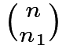 consists of a subset from a finite population of
consists of a subset from a finite population of  units indexed by
units indexed by  .
Let
.
Let  be the inclusion indicators of the units with
be the inclusion indicators of the units with  if unit
if unit  is sampled and
is sampled and  otherwise.
The vector
otherwise.
The vector  can take 1’s and
can take 1’s and  0’s, and each has equal probability.
0’s, and each has equal probability.
By Definition 32.1, simple random sampling is a special form of sampling without replacement because it does not allow for repeatedly sampling the same unit. Lemma 32.1 below summarizes the first two moments of the inclusion indicators.
Lemma 32.1
Under simple random sampling, we have
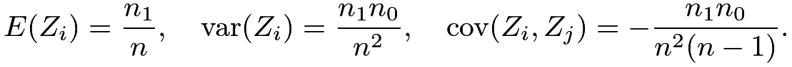 |
In more compact forms, we have
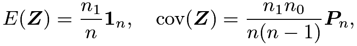 |
where 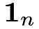 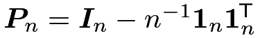 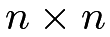 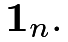-dimensional vector of  ’s, and
’s, and
Let
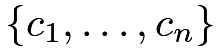
be a finite population with mean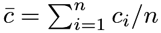
and variance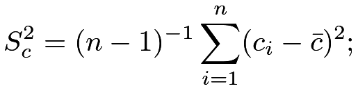 |
let
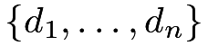
be another finite population with mean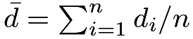
and variance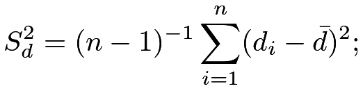 |
their covariance is
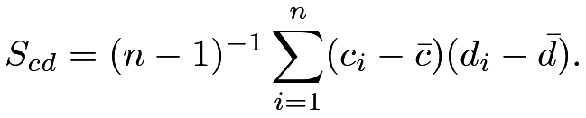 |
Under simple random sampling, the sample means are
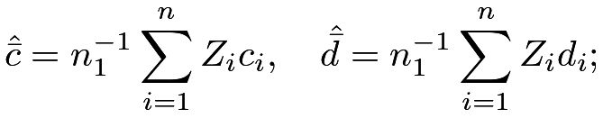 |
sample variances are
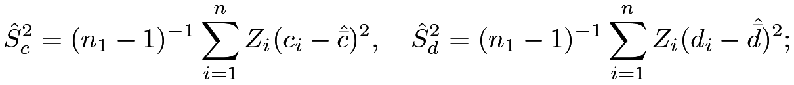 |
the sample covariance is
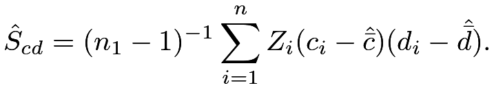 |
Lemma 32.2
Under simple random sampling, the sample means are unbiased for the population means:
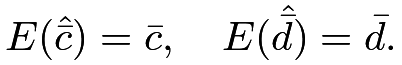 |
Their variances and covariance are
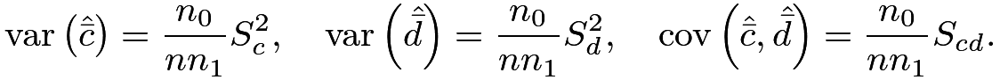 |
In the variance formulas in Lemma 32.2, the coefficient
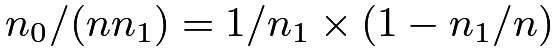
in Lemma 32.2 is different from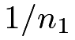
under IID sampling. The additional term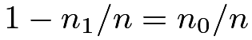
is called the finite population correction factor.Lemma 32.3 below gives the unbiasedness of the sample variances and covariance for estimating the population analogs.
Lemma 32.3
Under simple random sampling, the sample variances and covariance are unbiased for their population versions:
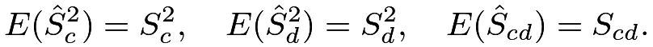 |
An important practical question is to make inference about
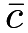
based on the simple random sample. This requires a more precise characterization of the distribution of its unbiased estimator . The finite-sample exact distribution of depends on the whole finite population , which is unknown. The following finite population CLT characterizes the asymptotic distribution of based on its first two moments.Lemma 32.4 (finite population CLT)
Under Under simple random sampling, as  , if
, if
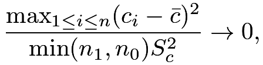 |
then
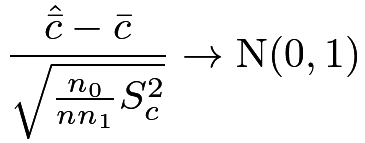 |
in distribution, and
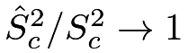
Lemma 32.4 justifies the Wald-type  confidence interval for :
confidence interval for :
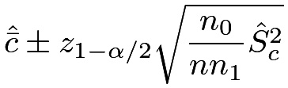 |
where  is the
is the  upper quantile of the standard Normal random variable.
upper quantile of the standard Normal random variable.
Appendix 32.B Proofs
Proof of Lemma 32.1:
By symmetry, the  ’s have the same mean, so
’s have the same mean, so
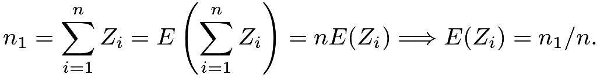 |
Because is a Bernoulli random variable, its variance is
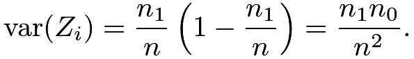 |
By symmetry again, the ’s have the same variance and the pairs
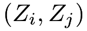
’s have the same covariance, so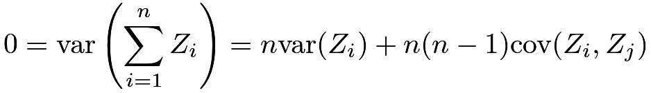 |
which implies that
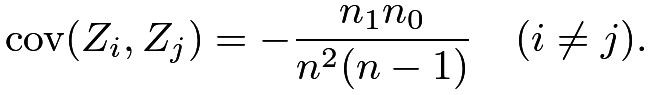 |

Proof of Lemma 32.2: The unbiasedness of the sample mean follows from linearity. For example,
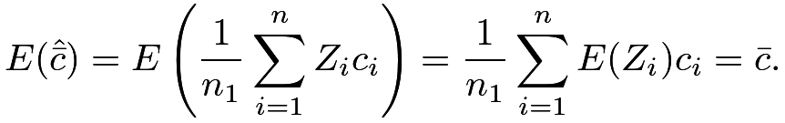 |
The covariance of the sample means is
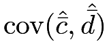 |
||||
 |
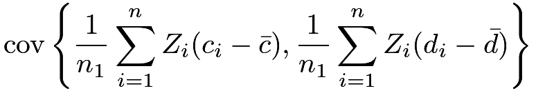 |
|||
|
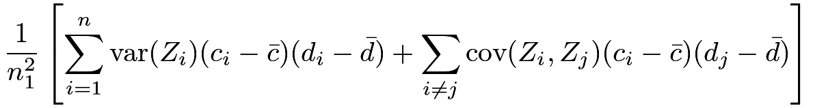 |
|||
|
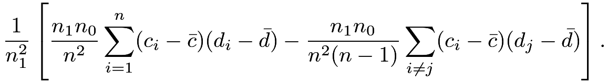 |
Because
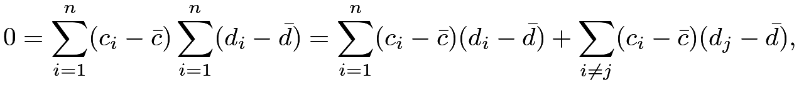 |
the covariance of the sample means reduces to
|
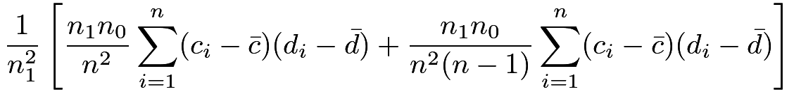 |
|||
|
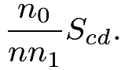 |
The variance formulas are just special cases with
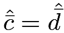
.
Proof of Lemma 32.3: We prove only the sample covariance term because the formulas for sample variances are special cases. We have the following decomposition:
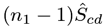 |
|
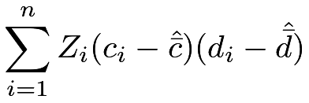 |
||
|
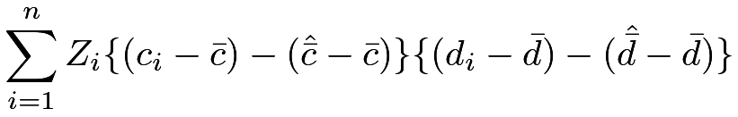 |
|||
|
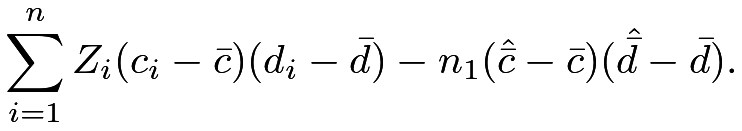 |
Taking expectations on both sides, we have
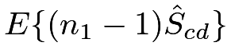 |
|
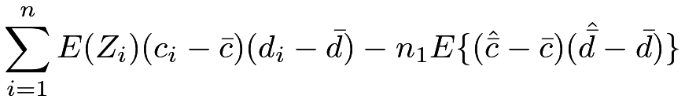 |
||
|
||||
|
||||
|
and the conclusion follows by dividing both sides by .
Proof of Lemma 32.4:
Hájek, (1960) gave a proof of the CLT for simple random sampling, and Lehmann, (1975) gave a more accessible version of the proof. Li and Ding, (2017) modified the CLT as presented in Lemma 32.4, and proved the consistency of the sample variance. Due to the technical complexities, I omit the proof.
Appendix 32.C Comments on the literature
Survey sampling and experimental design have been deeply connected ever since Neyman, (1934); Neyman, (1935)’s seminal work. Li and Ding, (2017) and Mukerjee et al., (2018) made many theoretical ties between these two areas.
Appendix 32.D Homework Problems
AF.1 Sampling without replacement and the Hypergeometric distribution
Consider a special case of Lemma 32.2 with ’s being binary. Assume the total number of 1’s equals  so the total number of 0’s equals . Let denote the total number of 1’s in the sample of size .
so the total number of 0’s equals . Let denote the total number of 1’s in the sample of size .
Find the distribution, mean, and variance of  .
.
Remark: follows a Hypergeometric distribution.
AF.2 Vector form of Lemma 32.2
Assume the ’s are vectors and define
Show that
References
- Abadie et al., (2020) Abadie, A., Athey, S., Imbens, G. W., and Wooldridge, J. M. (2020). Sampling-based versus design-based uncertainty in regression analysis. Econometrica, 88:265–296.
- Abadie and Imbens, (2006) Abadie, A. and Imbens, G. W. (2006). Large sample properties of matching estimators for average treatment effects. Econometrica, 74:235–267.
- Abadie and Imbens, (2008) Abadie, A. and Imbens, G. W. (2008). On the failure of the bootstrap for matching estimators. Econometrica, 76:1537–1557.
- Abadie and Imbens, (2011) Abadie, A. and Imbens, G. W. (2011). Bias-corrected matching estimators for average treatment effects. Journal of Business and Economic Statistics, 29:1–11.
- Abadie and Imbens, (2016) Abadie, A. and Imbens, G. W. (2016). Matching on the estimated propensity score. Econometrica, 84:781–807.
- Alwin and Hauser, (1975) Alwin, D. F. and Hauser, R. M. (1975). The decomposition of effects in path analysis. American Sociological Review, 40:37–47.
- Amarante et al., (2016) Amarante, V., Manacorda, M., Miguel, E., and Vigorito, A. (2016). Do cash transfers improve birth outcomes? evidence from matched vital statistics, program, and social security data. American Economic Journal: Economic Policy, 8:1–43.
- Anderson and Rubin, (1950) Anderson, T. W. and Rubin, H. (1950). The asymptotic properties of estimates of the parameters of a single equation in a complete system of stochastic equations. Annals of Mathematical Statistics, 21:570–582.
- Angrist et al., (2009) Angrist, J., Lang, D., and Oreopoulos, P. (2009). Incentives and services for college achievement: Evidence from a randomized trial. American Economic Journal: Applied Economics, 1:136–163.
- Angrist and Lavy, (2009) Angrist, J. and Lavy, V. (2009). The effects of high stakes high school achievement awards: Evidence from a randomized trial. American Economic Review, 99:1384–1414.
- Angrist, (1990) Angrist, J. D. (1990). Lifetime earnings and the Vietnam era draft lottery: evidence from social security administrative records. American Economic Review, 80:313–336.
- Angrist, (1998) Angrist, J. D. (1998). Estimating the labor market impact of voluntary military service using social security data on military applicants. Econometrica, 66:249–288.
- Angrist, (2022) Angrist, J. D. (2022). Empirical strategies in economics: Illuminating the path from cause to effect. Econometrica, 90:2509–2539.
- Angrist and Evans, (1998) Angrist, J. D. and Evans, W. N. (1998). Children and their parents’ labor supply: Evidence from exogenous variation in family size. American Economic Review, 88:450–477.
- Angrist and Imbens, (1995) Angrist, J. D. and Imbens, G. W. (1995). Two-stage least squares estimation of average causal effects in models with variable treatment intensity. Journal of the American Statistical Association, 90:431–442.
- Angrist et al., (1996) Angrist, J. D., Imbens, G. W., and Rubin, D. B. (1996). Identification of causal effects using instrumental variables (with discussion). Journal of the American Statistical Association, 91:444–455.
- Angrist and Krueger, (1991) Angrist, J. D. and Krueger, A. B. (1991). Does compulsory school attendance affect schooling and earnings? Quarterly Journal of Economics, 106:979–1014.
- Angrist and Pischke, (2008) Angrist, J. D. and Pischke, J.-S. (2008). Mostly Harmless Econometrics: An Empiricist’s Companion. Princeton: Princeton University Press.
- Angrist and Pischke, (2014) Angrist, J. D. and Pischke, J.-S. (2014). Mastering’Metrics: The Path from Cause to Effect. Princeton: Princeton University Press.
- Aronow et al., (2014) Aronow, P. M., Green, D. P., and Lee, D. K. K. (2014). Sharp bounds on the variance in randomized experiments. Annals of Statistics, 42:850–871.
- Asher and Novosad, (2020) Asher, S. and Novosad, P. (2020). Rural roads and local economic development. American Economic Review, 110:797–823.
- Baker and Lindeman, (1994) Baker, S. G. and Lindeman, K. S. (1994). The paired availability design: a proposal for evaluating epidural analgesia during labor. Statistics in Medicine, 13:2269–2278.
- Balke and Pearl, (1997) Balke, A. and Pearl, J. (1997). Bounds on treatment effects from studies with imperfect compliance. Journal of the American Statistical Association, 92:1171–1176.
- Ball et al., (1973) Ball, S., Bogatz, G., Rubin, D., and Beaton, A. (1973). Reading with television: An evaluation of the electric company. a report to the children’s television workshop. volumes 1 and 2.
- Bang and Robins, (2005) Bang, H. and Robins, J. M. (2005). Doubly robust estimation in missing data and causal inference models. Biometrics, 61:962–973.
- Barnard, (1947) Barnard, G. A. (1947). Significance tests for tables. Biometrika, 34:123–138.
- Baron and Kenny, (1986) Baron, R. M. and Kenny, D. A. (1986). The moderator-mediator variable distinction in social psychological research: Conceptual, strategic, and statistical considerations. Journal of Personality and Social Psychology, 51:1173–1182.
- Basmann, (1957) Basmann, R. L. (1957). A generalized classical method of linear estimation of coefficients in a structural equation. Econometrica, 25:77–83.
- Bazzano et al., (2003) Bazzano, L. A., He, J., Muntner, P., Vupputuri, S., and Whelton, P. K. (2003). Relationship between cigarette smoking and novel risk factors for cardiovascular disease in the United States. Annals of Internal Medicine, 138:891–897.
- Berk et al., (2013) Berk, R., Pitkin, E., Brown, L., Buja, A., George, E., and Zhao, L. (2013). Covariance adjustments for the analysis of randomized field experiments. Evaluation Review, 37:170–196.
- Bertrand and Mullainathan, (2004) Bertrand, M. and Mullainathan, S. (2004). Are Emily and Greg more employable than Lakisha and Jamal? A field experiment on labor market discrimination. American Economic Review, 94:991–1013.
- Bickel et al., (1975) Bickel, P. J., Hammel, E. A., and O’Connell, J. W. (1975). Sex bias in graduate admissions: Data from Berkeley. Science, 187:398–404.
- Bickel et al., (1993) Bickel, P. J., Klaassen, C. A. J., Ritov, Y., and Wellner, J. A. (1993). Efficient and Adaptive Estimation for Semiparametric Models. Baltimore: Johns Hopkins University Press.
- Bind and Rubin, (2020) Bind, M.-A. C. and Rubin, D. B. (2020). When possible, report a fisher-exact p value and display its underlying null randomization distribution. Proceedings of the National Academy of Sciences of the United States of America, 117:19151–19158.
- Blackwell, (2013) Blackwell, M. (2013). A framework for dynamic causal inference in political science. American Journal of Political Science, 57:504–520.
- Bloniarz et al., (2016) Bloniarz, A., Liu, H., Zhang, C. H., Sekhon, J., and Yu, B. (2016). Lasso adjustments of treatment effect estimates in randomized experiments. Proceedings of the National Academy of Sciences of the United States of America, 113:7383–7390.
- Bloom, (1984) Bloom, H. S. (1984). Accounting for no-shows in experimental evaluation designs. Evaluation Review, 8:225–246.
- Bor et al., (2014) Bor, J., Moscoe, E., Mutevedzi, P., Newell, M.-L., and Bärnighausen, T. (2014). Regression discontinuity designs in epidemiology: causal inference without randomized trials. Epidemiology, 25:729.
- Bowden et al., (2015) Bowden, J., Davey Smith, G., and Burgess, S. (2015). Mendelian randomization with invalid instruments: effect estimation and bias detection through Egger regression. International Journal of Epidemiology, 44:512–525.
- Bowden et al., (2018) Bowden, J., Spiller, W., Del Greco M, F., Sheehan, N., Thompson, J., Minelli, C., and Davey Smith, G. (2018). Improving the visualization, interpretation and analysis of two-sample summary data mendelian randomization via the radial plot and radial regression. International Journal of Epidemiology, 47:1264–1278.
- Box, (1979) Box, G. E. P. (1979). Robustness in the strategy of scientific model building. In Launer, R. L. and Wilkinson, G. N., editors, Robustness in Statistics, pages 201–236. New York: Academic Press, Inc.
- Box et al., (1978) Box, G. E. P., Hunter, W. H., and Hunter, S. (1978). Statistics for Experimenters: An Introduction to Design, Data Analysis, and Model Building. New York: John Wiley and Sons.
- Bradford Hill, (1965) Bradford Hill, A. (1965). The environment and disease: association or causation? Proceedings of the Royal Society of Medicine, 58:295–300.
- Bradford Hill, (2020) Bradford Hill, A. (2020). The environment and disease: association or causation? (with discussion). Observational Studies, 6:1–65.
- Bruhn and McKenzie, (2009) Bruhn, M. and McKenzie, D. (2009). In pursuit of balance: Randomization in practice in development field experiments. American Economic Journal: Applied Economics, 1:200–232.
- Brumback, (2022) Brumback, B. A. (2022). Fundamentals of Causal Inference: With R. New York: Chapman & Hall.
- Butler, (1969) Butler, C. C. (1969). A test for symmetry using the sample distribution function. Annals of Mathematical Statistics, 40:2209–2210.
- Cao et al., (2009) Cao, W., Tsiatis, A. A., and Davidian, M. (2009). Improving efficiency and robustness of the doubly robust estimator for a population mean with incomplete data. Biometrika, 96:723–734.
- Card, (1993) Card, D. (1993). Using geographic variation in college proximity to estimate the return to schooling. Technical report, National Bureau of Economic Research.
- Carpenter and Dobkin, (2009) Carpenter, C. and Dobkin, C. (2009). The effect of alcohol consumption on mortality: regression discontinuity evidence from the minimum drinking age. American Economic Journal: Applied Economics, 1:164–182.
- Cattaneo, (2010) Cattaneo, M. D. (2010). Efficient semiparametric estimation of multi-valued treatment effects under ignorability. Journal of Econometrics, 155:138–154.
- Cattaneo et al., (2015) Cattaneo, M. D., Frandsen, B. R., and Titiunik, R. (2015). Randomization inference in the regression discontinuity design: An application to party advantages in the US Senate. Journal of Causal Inference, 3:1–24.
- Chan et al., (2016) Chan, K. C. G., Yam, S. C. P., and Zhang, Z. (2016). Globally efficient non-parametric inference of average treatment effects by empirical balancing calibration weighting. Journal of the Royal Statistical Society: Series B (Statistical Methodology), 78:673–700.
- Charig et al., (1986) Charig, C. R., Webb, D. R., Payne, S. R., and Wickham, J. E. (1986). Comparison of treatment of renal calculi by open surgery, percutaneous nephrolithotomy, and extracorporeal shockwave lithotripsy. British Medical Journal, 292:879–882.
- Chen et al., (2007) Chen, H., Geng, Z., and Jia, J. (2007). Criteria for surrogate end points. Journal of the Royal Statistical Society: Series B (Statistical Methodology), 69:919–932.
- Cheng and Small, (2006) Cheng, J. and Small, D. S. (2006). Bounds on causal effects in three-arm trials with non-compliance. Journal of the Royal Statistical Society: Series B (Statistical Methodology), 68:815–836.
- Chernozhukov et al., (2018) Chernozhukov, V., Chetverikov, D., Demirer, M., Duflo, E., Hansen, C., Newey, W., and Robins, J. (2018). Double/debiased machine learning for treatment and structural parameters. Econometrics Journal, 21:C1–C68.
- Chong et al., (2016) Chong, A., Cohen, I., Field, E., Nakasone, E., and Torero, M. (2016). Iron deficiency and schooling attainment in peru. American Economic Journal: Applied Economics, 8:222–55.
- Chung and Romano, (2013) Chung, E. and Romano, J. (2013). Exact and asymptotically robust permutation tests. Annals of Statistics, 41:484–507.
- Cochran, (1938) Cochran, W. G. (1938). The omission or addition of an independent variate in multiple linear regression. Supplement to the Journal of the Royal Statistical Society, 5:171–176.
- Cochran, (1953) Cochran, W. G. (1953). Sampling Techniques. New York: Wiley.
- Cochran, (1957) Cochran, W. G. (1957). Analysis of covariance: its nature and uses. Biometrics, 13:261–281.
- Cochran, (1965) Cochran, W. G. (1965). The planning of observational studies of human populations (with discussion). Journal of the Royal Statistical Society: Series A (General), 128:234–266.
- Cochran, (1968) Cochran, W. G. (1968). The effectiveness of adjustment by subclassification in removing bias in observational studies. Biometrics, 24:295–313.
- Cochran, (2015) Cochran, W. G. (2015). Observational studies. Observational Studies, 1:126–136.
- Cochran and Rubin, (1973) Cochran, W. G. and Rubin, D. B. (1973). Controlling bias in observational studies: A review. Sankhyā, 35:417–446.
- Cornfield et al., (1959) Cornfield, J., Haenszel, W., Hammond, E. C., Lilienfeld, A. M., Shimkin, M. B., and Wynder, E. L. (1959). Smoking and lung cancer: recent evidence and a discussion of some questions. Journal of the National Cancer Institute, 22:173–203.
- Cox, (1982) Cox, D. R. (1982). Randomization and concomitant variables in the design of experiments. In G. Kallianpur, P. R. K. and Ghosh, J. K., editors, Statistics and Probability: Essays in Honor of C. R. Rao, pages 197–202. North-Holland, Amsterdam.
- Cox, (2007) Cox, D. R. (2007). On a generalization of a result of W. G. Cochran. Biometrika, 94:755–759.
- Crump et al., (2009) Crump, R. K., Hotz, V. J., Imbens, G. W., and Mitnik, O. A. (2009). Dealing with limited overlap in estimation of average treatment effects. Biometrika, 96:187–199.
- Cunningham, (2021) Cunningham, S. (2021). Causal Inference: The Mixtape. New Haven: Yale University Press.
- Cuzick et al., (1997) Cuzick, J., Edwards, R., and Segnan, N. (1997). Adjusting for non-compliance and contamination in randomized clinical trials. Statistics in Medicine, 16:1017–1029.
- D’Amour et al., (2021) D’Amour, A., Ding, P., Feller, A., Lei, L., and Sekhon, J. (2021). Overlap in observational studies with high-dimensional covariates. Journal of Econometrics, 221:644–654.
- Dasgupta et al., (2015)
Dasgupta, T., Pillai, N. S., and Rubin, D. B. (2015).
Causal inference from
 factorial designs by using potential
outcomes.
Journal of the Royal Statistical Society: Series B (Statistical
Methodology), 77:727–753.
factorial designs by using potential
outcomes.
Journal of the Royal Statistical Society: Series B (Statistical
Methodology), 77:727–753.
- Davey Smith and Ebrahim, (2003) Davey Smith, G. and Ebrahim, S. (2003). “Mendelian randomization”: can genetic epidemiology contribute to understanding environmental determinants of disease? International Journal of Epidemiology, 32:1–22.
- Davison and Hinkley, (1997) Davison, A. C. and Hinkley, D. V. (1997). Bootstrap Methods and Their Application. Cambridge: Cambridge University Press.
- Dawid, (1979) Dawid, A. P. (1979). Conditional independence in statistical theory. Journal of the Royal Statistical Society: Series B (Methodological), 41:1–15.
- Dawid, (2000) Dawid, A. P. (2000). Causal inference without counterfactuals (with discussion). Journal of the American Statistical Association, 95:407–424.
- Dehejia and Wahba, (1999) Dehejia, R. H. and Wahba, S. (1999). Causal effects in nonexperimental studies: Reevaluating the evaluation of training programs. Journal of the American statistical Association, 94:1053–1062.
- Ding, (2016) Ding, P. (2016). A paradox from randomization-based causal inference (with discussion). Statistical Science, 32:331–345.
- Ding, (2021) Ding, P. (2021). The Frisch–Waugh–Lovell theorem for standard errors. Statistics and Probability Letters, 168:108945.
- Ding and Dasgupta, (2016) Ding, P. and Dasgupta, T. (2016). A potential tale of two by two tables from completely randomized experiments. Journal of American Statistical Association, 111:157–168.
- Ding and Dasgupta, (2017) Ding, P. and Dasgupta, T. (2017). A randomization-based perspective on analysis of variance: a test statistic robust to treatment effect heterogeneity. Biometrika, 105:45–56.
- Ding et al., (2016) Ding, P., Feller, A., and Miratrix, L. (2016). Randomization inference for treatment effect variation. Journal of the Royal Statistical Society: Series B (Statistical Methodology), 78:655–671.
- Ding et al., (2019) Ding, P., Feller, A., and Miratrix, L. (2019). Decomposing treatment effect variation. Journal of the American Statistical Association, 114:304–317.
- Ding et al., (2011) Ding, P., Geng, Z., Yan, W., and Zhou, X.-H. (2011). Identifiability and estimation of causal effects by principal stratification with outcomes truncated by death. Journal of the American Statistical Association, 106:1578–1591.
- Ding and Li, (2018) Ding, P. and Li, F. (2018). Causal inference: A missing data perspective. Statistical Science, 33:214–237.
- (88) Ding, P., Li, X., and Miratrix, L. W. (2017a). Bridging finite and super population causal inference. Journal of Causal Inference, 5:20160027.
- Ding and Lu, (2017) Ding, P. and Lu, J. (2017). Principal stratification analysis using principal scores. Journal of the Royal Statistical Society: Series B (Statistical Methodology), 79:757–777.
- Ding and Miratrix, (2015) Ding, P. and Miratrix, L. W. (2015). To adjust or not to adjust? Sensitivity analysis of M-bias and butterfly-bias. Journal of Causal Inference, 3:41–57.
- Ding and VanderWeele, (2014) Ding, P. and VanderWeele, T. J. (2014). Generalized Cornfield conditions for the risk difference. Biometrika, 101:971–977.
- Ding and VanderWeele, (2016) Ding, P. and VanderWeele, T. J. (2016). Sensitivity analysis without assumptions. Epidemiology, 27:368–377.
- Ding and Vanderweele, (2016) Ding, P. and Vanderweele, T. J. (2016). Sharp sensitivity bounds for mediation under unmeasured mediator-outcome confounding. Biometrika, 103:483–490.
- (94) Ding, P., VanderWeele, T. J., and Robins, J. M. (2017b). Instrumental variables as bias amplifiers with general outcome and confounding. Biometrika, 104:291–302.
- Doll and Hill, (1950) Doll, R. and Hill, A. B. (1950). Smoking and carcinoma of the lung. British Medical Journal, 2:739.
- Dorn, (1953) Dorn, H. F. (1953). Philosophy of inferences from retrospective studies. American Journal of Public Health and the Nations Health, 43:677–683.
- Durrett, (2019) Durrett, R. (2019). Probability: Theory and Examples. Cambridge: Cambridge University Press.
- Efron, (1979) Efron, B. (1979). Bootstrap methods: Another look at the jackknife. The Annals of Statistics, 7:1–26.
- Efron and Feldman, (1991) Efron, B. and Feldman, D. (1991). Compliance as an explanatory variable in clinical trials (with discussion). Journal of the American Statistical Association, 86:9–17.
- Eicker, (1967) Eicker, F. (1967). Limit theorems for regressions with unequal and dependent errors. In Proceedings of the Fifth Berkeley Symposium on Mathematical Statistics and Probability, volume 1, pages 59–82. Berkeley, CA: University of California Press.
- Fan and Gijbels, (1996) Fan, J. and Gijbels, I. (1996). Local Polynomial Modelling and Its Applications. New York: Chapman and Hall/CRC.
- Fieller, (1954) Fieller, E. C. (1954). Some problems in interval estimation. Journal of the Royal Statistical Society: Series B (Methodological), 16:175–185.
- Firth and Bennett, (1998) Firth, D. and Bennett, K. E. (1998). Robust models in probability sampling (with discussion). Journal of the Royal Statistical Society: Series B (Statistical Methodology), 60:3–21.
- Fisher, (1925) Fisher, R. A. (1925). Statistical Methods for Research Workers. Edinburgh by Oliver and Boyd, 1st edition.
- Fisher, (1935) Fisher, R. A. (1935). The Design of Experiments. Edinburgh, London: Oliver and Boyd, 1st edition.
- Fisher, (1957) Fisher, R. A. (1957). Dangers of cigarette smoking [letter]. British Medical Journal, 2:297–298.
- (107) Fogarty, C. B. (2018a). On mitigating the analytical limitations of finely stratified experiments. Journal of the Royal Statistical Society. Series B (Statistical Methodology), 80:1035–1056.
- (108) Fogarty, C. B. (2018b). Regression assisted inference for the average treatment effect in paired experiments. Biometrika, 105:994–1000.
- Follmann, (2000) Follmann, D. A. (2000). On the effect of treatment among would-be treatment compliers: An analysis of the multiple risk factor intervention trial. Journal of the American Statistical Association, 95:1101–1109.
- Forastiere et al., (2018) Forastiere, L., Mattei, A., and Ding, P. (2018). Principal ignorability in mediation analysis: through and beyond sequential ignorability. Biometrika, 105:979–986.
- Frangakis and Rubin, (2002) Frangakis, C. E. and Rubin, D. B. (2002). Principal stratification in causal inference. Biometrics, 58:21–29.
- (112) Freedman, D. A. (2008a). On regression adjustments in experiments with several treatments. Annals of Applied Statistics, 2:176–196.
- (113) Freedman, D. A. (2008b). On regression adjustments to experimental data. Advances in Applied Mathematics, 40:180–193.
- (114) Freedman, D. A. (2008c). Randomization does not justify logistic regression. Statistical Science, 23:237–249.
- Freedman and Berk, (2008) Freedman, D. A. and Berk, R. A. (2008). Weighting regressions by propensity scores. Evaluation Review, 32:392–409.
- Frumento et al., (2012) Frumento, P., Mealli, F., Pacini, B., and Rubin, D. B. (2012). Evaluating the effect of training on wages in the presence of noncompliance, nonemployment, and missing outcome data. Journal of the American Statistical Association, 107:450–466.
- Funk et al., (2011) Funk, M. J., Westreich, D., Wiesen, C., Stürmer, T., Brookhart, M. A., and Davidian, M. (2011). Doubly robust estimation of causal effects. American Journal of Epidemiology, 173:761–767.
- Gastwirth et al., (1998) Gastwirth, J. L., KRIEGER, A. M., and ROSENBAUM, P. R. (1998). Cornfield’s inequality. In Armitage, P. and Colton, T., editors, Encyclopedia of Biostatistics. New York: Wiley.
- Gerber and Green, (2012) Gerber, A. S. and Green, D. P. (2012). Field Experiments: Design, Analysis, and Interpretation. WW Norton.
- Gerber et al., (2008) Gerber, A. S., Green, D. P., and Larimer, C. W. (2008). Social pressure and voter turnout: Evidence from a large-scale field experiment. American Political Science Review, 102:33–48.
- Gilbert and Hudgens, (2008) Gilbert, P. B. and Hudgens, M. G. (2008). Evaluating candidate principal surrogate endpoints. Biometrics, 64:1146–1154.
- Gould, (1998) Gould, A. L. (1998). Multi-centre trial analysis revisited. Statistics in Medicine, 17:1779–1797.
- Greevy et al., (2004) Greevy, R., Lu, B., Silber, J. H., and Rosenbaum, P. (2004). Optimal multivariate matching before randomization. Biostatistics, 5:263–275.
- Guo and Basse, (2023) Guo, K. and Basse, G. (2023). The generalized Oaxaca–Blinder estimator. Journal of American Statistical Association, 118:524–536.
- Guo and Rothenhäusler, (2022) Guo, K. and Rothenhäusler, D. (2022). On the statistical role of inexact matching in observational studies. Biometrika.
- Hahn, (1998) Hahn, J. (1998). On the role of the propensity score in efficient semiparametric estimation of average treatment effects. Econometrica, 66:315–331.
- Hahn et al., (2001) Hahn, J., Todd, P., and Van der Klaauw, W. (2001). Identification and estimation of treatment effects with a regression-discontinuity design. Econometrica, 69:201–209.
- Hahn et al., (2020) Hahn, P. R., Murray, J. S., and Carvalho, C. M. (2020). Bayesian regression tree models for causal inference: regularization, confounding, and heterogeneous effects. Bayesian Analysis, 15:965–1056.
- Hainmueller, (2012) Hainmueller, J. (2012). Entropy balancing for causal effects: A multivariate reweighting method to produce balanced samples in observational studies. Political Analysis, 20:25–46.
- Hájek, (1960) Hájek, J. (1960). Limiting distributions in simple random sampling from a finite population. Publications of the Mathematics Institute of the Hungarian Academy of Science, 5:361–74.
- Hájek, (1971) Hájek, J. (1971). Comment on “an essay on the logical foundations of survey sampling, part one”. The foundations of survey sampling, 236.
- Hammond and Horn, (1958) Hammond, E. C. and Horn, D. (1958). Smoking and death rates: report on forty four months of follow-up of men. Journal of the American Medicial Association, 166:1159–1172, 1294–1308.
- Hansen, (1982) Hansen, L. P. (1982). Large sample properties of generalized method of moments estimators. Econometrica, 50:1029–1054.
- Hartley et al., (1969) Hartley, H. O., Rao, J. N. K., and Kiefer, G. (1969). Variance estimation with one unit per stratum. Journal of the American Statistical Association, 64:841–851.
- Hausman, (1978) Hausman, J. A. (1978). Specification tests in econometrics. Econometrica, 46:1251–1271.
- Hearst et al., (1986) Hearst, N., Newman, T. B., and Hulley, S. B. (1986). Delayed effects of the military draft on mortality. New England Journal of Medicine, 314:620–624.
- Heckman and Navarro-Lozano, (2004) Heckman, J. and Navarro-Lozano, S. (2004). Using matching, instrumental variables, and control functions to estimate economic choice models. Review of Economics and Statistics, 86:30–57.
- Heckman, (1979) Heckman, J. J. (1979). Sample selection bias as a specification error. Econometrica, 47:153–161.
- Hennessy et al., (2016) Hennessy, J., Dasgupta, T., Miratrix, L., Pattanayak, C., and Sarkar, P. (2016). A conditional randomization test to account for covariate imbalance in randomized experiments. Journal of Causal Inference, 4:61–80.
- Hernán et al., (2000) Hernán, M. Á., Brumback, B., and Robins, J. M. (2000). Marginal structural models to estimate the causal effect of zidovudine on the survival of hiv-positive men. Epidemiology, 11:561–570.
- Hernán and Robins, (2020) Hernán, M. A. and Robins, J. M. (2020). Causal Inference: What If. Boca Raton: Chapman & Hall/CRC.
- Hill et al., (2002) Hill, J., Waldfogel, J., and Brooks-Gunn, J. (2002). Differential effects of high-quality child care. Journal of Policy Analysis and Management, 21:601–627.
- Hill, (2011) Hill, J. L. (2011). Bayesian nonparametric modeling for causal inference. Journal of Computational and Graphical Statistics, 20:217–240.
- Hirano and Imbens, (2001) Hirano, K. and Imbens, G. W. (2001). Estimation of causal effects using propensity score weighting: An application to data on right heart catheterization. Health Services and Outcomes Research Methodology, 2:259–278.
- Hirano et al., (2000) Hirano, K., Imbens, G. W., Rubin, D. B., and Zhou, X. H. (2000). Assessing the effect of an influenza vaccine in an encouragement design. Biostatistics, 1:69–88.
- Ho et al., (2007) Ho, D. E., Imai, K., King, G., and Stuart, E. A. (2007). Matching as nonparametric preprocessing for reducing model dependence in parametric causal inference. Political Analysis, 15:199–236.
- Ho et al., (2011) Ho, D. E., Imai, K., King, G., and Stuart, E. A. (2011). Matchit: nonparametric preprocessing for parametric causal inference. Journal of Statistical Software, 42:1–28.
- Hodges and Lehmann, (1962) Hodges, J. L. and Lehmann, E. L. (1962). Rank methods for combination of independent experiments in analysis of variance. Annals of Mathematical Statistics, 33:482–497.
- Holland, (1986) Holland, P. W. (1986). Statistics and causal inference (with discussion). Journal of the American statistical Association, 81:945–960.
- Hong and Raudenbush, (2008) Hong, G. and Raudenbush, S. W. (2008). Causal inference for time-varying instructional treatments. Journal of Educational and Behavioral Statistics, 33:333–362.
- Horvitz and Thompson, (1952) Horvitz, D. G. and Thompson, D. J. (1952). A generalization of sampling without replacement from a finite universe. Journal of the American statistical Association, 47:663–685.
- Huber, (2023) Huber, M. (2023). Causal analysis: Impact evaluation and Causal Machine Learning with applications in R. Cambridge: MIT Press.
- Huber, (1967) Huber, P. J. (1967). The behavior of maximum likelihood estimates under nonstandard conditions. In Cam, L. M. L. and Neyman, J., editors, Proceedings of the Fifth Berkeley Symposium on Mathematical Statistics and Probability, volume 1, pages 221–233. Berkeley, California: University of California Press.
- Hudgens and Halloran, (2008) Hudgens, M. G. and Halloran, M. E. (2008). Toward causal inference with interference. Journal of the American Statistical Association, 103:832–842.
- Huntington-Klein, (2022) Huntington-Klein, N. (2022). The effect: An introduction to research design and causality. New York: Chapman & Hall.
- Hyman, (1955) Hyman, H. H. (1955). Survey Design and Analysis: Principles, Cases, and Procedures. Glencoe, IL: Free Press.
- (157) Imai, K. (2008a). Sharp bounds on the causal effects in randomized experiments with “truncation-by-death”. Statistics and Probability Letters, 78:144–149.
- (158) Imai, K. (2008b). Variance identification and efficiency analysis in randomized experiments under the matched-pair design. Statistics in Medicine, 27:4857–4873.
- Imai et al., (2010) Imai, K., Keele, L., and Yamamoto, T. (2010). Identification, inference and sensitivity analysis for causal mediation effects. Statistical Science, 25:51–71.
- Imai and Van Dyk, (2004) Imai, K. and Van Dyk, D. A. (2004). Causal inference with general treatment regimes: Generalizing the propensity score. Journal of the American Statistical Association, 99:854–866.
- Imbens, (2020) Imbens, G. (2020). Potential outcome and directed acyclic graph approaches to causality: Relevance for empirical practice in economics. Journal of Economic Literature, 58:1129–1179.
- Imbens, (2003) Imbens, G. W. (2003). Sensitivity to exogeneity assumptions in program evaluation. American Economic Review, 93:126–132.
- Imbens, (2004) Imbens, G. W. (2004). Nonparametric estimation of average treatment effects under exogeneity: A review. Review of Economics and Statistics, 86:4–29.
- Imbens, (2014) Imbens, G. W. (2014). Instrumental variables: An econometrician’s perspective. Statistical Science, 29:323–358.
- Imbens, (2015) Imbens, G. W. (2015). Matching methods in practice: Three examples. Journal of Human Resources, 50:373–419.
- Imbens and Angrist, (1994) Imbens, G. W. and Angrist, J. D. (1994). Identification and estimation of local average treatment effects. Econometrica, 62:467–475.
- Imbens and Lemieux, (2008) Imbens, G. W. and Lemieux, T. (2008). Regression discontinuity designs: A guide to practice. Journal of Econometrics, 142:615–635.
- Imbens and Manski, (2004) Imbens, G. W. and Manski, C. F. (2004). Confidence intervals for partially identified parameters. Econometrica, 72:1845–1857.
- Imbens and Rubin, (1997) Imbens, G. W. and Rubin, D. B. (1997). Estimating outcome distributions for compliers in instrumental variables models. Review of Economic Studies, 64:555–574.
- Imbens and Rubin, (2015) Imbens, G. W. and Rubin, D. B. (2015). Causal Inference for Statistics, Social, and Biomedical Sciences: An Introduction. Cambridge: Cambridge University Press.
- Investigators et al., (2014) Investigators, I. T. et al. (2014). Endovascular or open repair strategy for ruptured abdominal aortic aneurysm: 30 day outcomes from improve randomised trial. British Medical Journal, 348:f7661.
- Ioannidis et al., (2019) Ioannidis, J. P. A., Tan, Y. J., and Blum, M. R. (2019). Limitations and misinterpretations of E-values for sensitivity analyses of observational studies. Annals of Internal Medicine, 170:108–111.
- Jackson et al., (2006) Jackson, L. A., Jackson, M. L., Nelson, J. C., Neuzil, K. M., and Weiss, N. S. (2006). Evidence of bias in estimates of influenza vaccine effectiveness in seniors. International Journal of Epidemiology, 35:337–344.
- Janssen, (1997) Janssen, A. (1997). Studentized permutation tests for non-iid hypotheses and the generalized Behrens-Fisher problem. Statistics and Probability Letters, 36:9–21.
- Jiang and Ding, (2020) Jiang, Z. and Ding, P. (2020). Measurement errors in the binary instrumental variable model. Biometrika, 107:238–245.
- Jiang and Ding, (2021) Jiang, Z. and Ding, P. (2021). Identification of causal effects within principal strata using auxiliary variables. Statistical Science, 36:493–508.
- Jiang et al., (2016) Jiang, Z., Ding, P., and Geng, Z. (2016). Principal causal effect identification and surrogate end point evaluation by multiple trials. Journal of the Royal Statistical Society: Series B (Statistical Methodology), 78:829–848.
- Jiang et al., (2022) Jiang, Z., Yang, S., and Ding, P. (2022). Multiply robust estimation of causal effects under principal ignorability. Journal of the Royal Statistical Society - Series B (Statistical Methodology), 84:1423–1445.
- Jin and Rubin, (2008) Jin, H. and Rubin, D. B. (2008). Principal stratification for causal inference with extended partial compliance. Journal of the American Statistical Association, 103:101–111.
- Jo and Stuart, (2009) Jo, B. and Stuart, E. A. (2009). On the use of propensity scores in principal causal effect estimation. Statistics in Medicine, 28:2857–2875.
- Jo et al., (2011) Jo, B., Stuart, E. A., MacKinnon, D. P., and Vinokur, A. D. (2011). The use of propensity scores in mediation analysis. Multivariate Behavioral Research, 46:425–452.
- Judd and Kenny, (1981) Judd, C. M. and Kenny, D. A. (1981). Process analysis estimating mediation in treatment evaluations. Evaluation Review, 5:602–619.
- Kang and Schafer, (2007) Kang, J. D. Y. and Schafer, J. L. (2007). Demystifying double robustness: A comparison of alternative strategies for estimating a population mean from incomplete data. Statistical Science, 22:523–539.
- Katan, (1986) Katan, M. B. (1986). Apoupoprotein E isoforms, serum cholesterol, and cancer. Lancet, 327:507–508.
- King and Zeng, (2006) King, G. and Zeng, L. (2006). The dangers of extreme counterfactuals. Political Analysis, 14:131–159.
- Kitagawa, (2015) Kitagawa, T. (2015). A test for instrument validity. Econometrica, 83:2043–2063.
- Koenker and Xiao, (2002) Koenker, R. and Xiao, Z. (2002). Inference on the quantile regression process. Econometrica, 70:1583–1612.
- Künzel et al., (2019) Künzel, S. R., Sekhon, J. S., Bickel, P. J., and Yu, B. (2019). Metalearners for estimating heterogeneous treatment effects using machine learning. Proceedings of the National Academy of Sciences of the United States of America, 116:4156–4165.
- Kurth et al., (2005) Kurth, T., Walker, A. M., Glynn, R. J., Chan, K. A., Gaziano, J. M., Berger, K., and Robins, J. M. (2005). Results of multivariable logistic regression, propensity matching, propensity adjustment, and propensity-based weighting under conditions of nonuniform effect. American Journal of Epidemiology, 163:262–270.
- LaLonde, (1986) LaLonde, R. J. (1986). Evaluating the econometric evaluations of training programs with experimental data. American Economic Review, 76:604–620.
- Leamer, (1978) Leamer, E. (1978). Specification Searches: Ad Hoc Inference with Nonexperimental Data. John Wiley and Sons.
- Lee, (2008) Lee, D. S. (2008). Randomized experiments from non-random selection in US House elections. Journal of Econometrics, 142:675–697.
- Lee, (2009) Lee, D. S. (2009). Training, wages, and sample selection: Estimating sharp bounds on treatment effects. Review of Economic Studies, 76:1071–1102.
- Lee and Lemieux, (2010) Lee, D. S. and Lemieux, T. (2010). Regression discontinuity designs in economics. Journal of Economic Literature, 48:281–355.
- Lee, (2018) Lee, M.-J. (2018). Simple least squares estimator for treatment effects using propensity score residuals. Biometrika, 105:149–164.
- Lee, (2011) Lee, W.-C. (2011). Bounding the bias of unmeasured factors with confounding and effect-modifying potentials. Statistics in Medicine, 30:1007–1017.
- Lehmann, (1975) Lehmann, E. L. (1975). Nonparametrics: Statistical Methods Based on Ranks. California: Holden-Day, Inc.
- Lei and Ding, (2021) Lei, L. and Ding, P. (2021). Regression adjustment in completely randomized experiments with a diverging number of covariates. Biometrika, 108:815–828.
- Lewis, (1973) Lewis, D. (1973). Causation. Journal of Philosophy, 70:556–567.
- Li et al., (2023) Li, F., Ding, P., and Mealli, F. (2023). Bayesian causal inference: a critical review. Philosophical Transactions of the Royal Society A, 381:20220153.
- Li et al., (2015) Li, F., Mattei, A., and Mealli, F. (2015). Evaluating the causal effect of university grants on student dropout: evidence from a regression discontinuity design using principal stratification. Annals of Applied Statistics, 9:1906–1931.
- (202) Li, F., Morgan, K. L., and Zaslavsky, A. M. (2018a). Balancing covariates via propensity score weighting. Journal of the American Statistical Association, 113:390–400.
- Li et al., (2019) Li, F., Thomas, L. E., and Li, F. (2019). Addressing extreme propensity scores via the overlap weights. American Journal of Epidemiology, 188:250–257.
- Li and Ding, (2016) Li, X. and Ding, P. (2016). Exact confidence intervals for the average causal effect on a binary outcome. Statistics in Medicine, 35:957–960.
- Li and Ding, (2017) Li, X. and Ding, P. (2017). General forms of finite population central limit theorems with applications to causal inference. Journal of the American Statistical Association, 112:1759–1769.
- Li and Ding, (2020) Li, X. and Ding, P. (2020). Rerandomization and regression adjustment. Journal of the Royal Statistical Society, Series B (Statistical Methodology), 82:241–268.
- (207) Li, X., Ding, P., and Rubin, D. B. (2018b). Asymptotic theory of rerandomization in treatment-control experiments. Proceedings of the National Academy of Sciences of the United States of America, 115:9157–9162.
- Lin, (2013) Lin, W. (2013). Agnostic notes on regression adjustments to experimental data: Reexamining Freedman’s critique. Annals of Applied Statistics, 7:295–318.
- Lin et al., (2023) Lin, Z., Ding, P., and Han, F. (2023). Estimation based on nearest neighbor matching: from density ratio to average treatment effect. Econometrica.
- Lind, (1753) Lind, J. (1753). A treatise of the scurvy. Three Parts. Containing an Inquiry into the Nature, Causes and Cure, of that Disease. Together with a Critical and Chronological View of what has been Published on the Subject.
- Lipsitch et al., (2010) Lipsitch, M., Tchetgen Tchetgen, E., and Cohen, T. (2010). Negative controls: a tool for detecting confounding and bias in observational studies. Epidemiology, 21:383–388.
- Little and An, (2004) Little, R. and An, H. (2004). Robust likelihood-based analysis of multivariate data with missing values. Statistica Sinica, 14:949–968.
- Liu and Yang, (2020) Liu, H. and Yang, Y. (2020). Regression-adjusted average treatment effect estimates in stratified randomized experiments. Biometrika, 107:935–948.
- Long and Ervin, (2000) Long, J. S. and Ervin, L. H. (2000). Using heteroscedasticity consistent standard errors in the linear regression model. American Statistician, 54:217–224.
- Lu and Ding, (2023) Lu, S. and Ding, P. (2023). Flexible sensitivity analysis for causal inference in observational studies subject to unmeasured confounding. https://arxiv.org/abs/2305.17643.
- Lumley et al., (2011) Lumley, T., Shaw, P. A., and Dai, J. Y. (2011). Connections between survey calibration estimators and semiparametric models for incomplete data. International Statistical Review, 79:200–220.
- Lunceford and Davidian, (2004) Lunceford, J. K. and Davidian, M. (2004). Stratification and weighting via the propensity score in estimation of causal treatment effects: a comparative study. Statistics in Medicine, 23:2937–2960.
- Luo et al., (2021) Luo, X., Dasgupta, T., Xie, M., and Liu, R. Y. (2021). Leveraging the fisher randomization test using confidence distributions: Inference, combination and fusion learning. Journal of the Royal Statistical Society: Series B (Statistical Methodology), 83:777–797.
- Manski, (1990) Manski, C. F. (1990). Nonparametric bounds on treatment effects. American Economic Review, 2:319–323.
- Manski, (2003) Manski, C. F. (2003). Partial Identification of Probability Distributions. New York: Springer.
- Mattei et al., (2013) Mattei, A., Li, F., and Mealli, F. (2013). Exploiting multiple outcomes in bayesian principal stratification analysis with application to the evaluation of a job training program. Annals of Applied Statistics, 7:2336–2360.
- McCrary, (2008) McCrary, J. (2008). Manipulation of the running variable in the regression discontinuity design: A density test. Journal of Econometrics, 142:698–714.
- McDonald et al., (1992) McDonald, C. J., Hui, S. L., and Tierney, W. M. (1992). Effects of computer reminders for influenza vaccination on morbidity during influenza epidemics. MD Computing: Computers in Medical Practice, 9:304–312.
- McGrath et al., (2021) McGrath, S., Young, J. G., and Hernán, M. A. (2021). Revisiting the g-null paradox. Epidemiology, 33:114–120.
- Mealli and Pacini, (2013) Mealli, F. and Pacini, B. (2013). Using secondary outcomes to sharpen inference in randomized experiments with noncompliance. Journal of the American Statistical Association, 108:1120–1131.
- Meinert et al., (1970) Meinert, C. L., Knatterud, G. L., Prout, T. E., and Klimt, C. R. (1970). A study of the effects of hypoglycemic agents on vascular complications in patients with adult-onset diabetes. ii. mortality results. Diabetes, 19:Suppl–789.
- Mercatanti and Li, (2014) Mercatanti, A. and Li, F. (2014). Do debit cards increase household spending? evidence from a semiparametric causal analysis of a survey. Annals of Applied Statistics, 8:2485–2508.
- Ming and Rosenbaum, (2000) Ming, K. and Rosenbaum, P. R. (2000). Substantial gains in bias reduction from matching with a variable number of controls. Biometrics, 56:118–124.
- Ming and Rosenbaum, (2001) Ming, K. and Rosenbaum, P. R. (2001). A note on optimal matching with variable controls using the assignment algorithm. Journal of Computational and Graphical Statistics, 10:455–463.
- Miratrix et al., (2018) Miratrix, L. W., Sekhon, J. S., Theodoridis, A. G., and Campos, L. F. (2018). Worth weighting? how to think about and use weights in survey experiments. Political Analysis, 26:275–291.
- Miratrix et al., (2013) Miratrix, L. W., Sekhon, J. S., and Yu, B. (2013). Adjusting treatment effect estimates by post-stratification in randomized experiments. Journal of the Royal Statistical Society: Series B (Statistical Methodology), 75:369–396.
- Morgan and Rubin, (2012) Morgan, K. L. and Rubin, D. B. (2012). Rerandomization to improve covariate balance in experiments. Annals of Statistics, 40:1263–1282.
- Morgan and Winship, (2015) Morgan, S. L. and Winship, C. (2015). Counterfactuals and Causal Inference. Cambridge: Cambridge University Press.
- Mukerjee et al., (2018) Mukerjee, R., Dasgupta, T., and Rubin, D. B. (2018). Using standard tools from finite population sampling to improve causal inference for complex experiments. Journal of the American Statistical Association, 113:868–881.
- Naimi et al., (2017) Naimi, A. I., Cole, S. R., and Kennedy, E. H. (2017). An introduction to g methods. International Journal of Epidemiology, 46:756–762.
- Negi and Wooldridge, (2021) Negi, A. and Wooldridge, J. M. (2021). Revisiting regression adjustment in experiments with heterogeneous treatment effects. Econometric Reviews, 40:504–534.
- Neyman, (1923) Neyman, J. (1923). On the application of probability theory to agricultural experiments. essay on principles (with discussion). section 9 (translated). reprinted ed. Statistical Science, 5:465–472.
- Neyman, (1934) Neyman, J. (1934). On the two different aspects of the representative method: the method of stratified sampling and the method of purposive selection (with discussion). Journal of the Royal Statistical Society, 97:558–625.
- Neyman, (1935) Neyman, J. (1935). Statistical problems in agricultural experimentation (with discussion). Supplement to the Journal of the Royal Statistical Society, 2:107–180.
- Nguyen et al., (2021) Nguyen, T. Q., Schmid, I., Ogburn, E. L., and Stuart, E. A. (2021). Clarifying causal mediation analysis for the applied researcher: Effect identification via three assumptions and five potential outcomes. Psychological Methods, 26:255–271.
- Otsu and Rai, (2017) Otsu, T. and Rai, Y. (2017). Bootstrap inference of matching estimators for average treatment effects. Journal of the American Statistical Association, 112:1720–1732.
- Pearl, (1995) Pearl, J. (1995). Causal diagrams for empirical research (with discussion). Biometrika, 82:669–688.
- Pearl, (2000) Pearl, J. (2000). Causality: Models, Reasoning and Inference. Cambridge: Cambridge University Press.
- Pearl, (2001) Pearl, J. (2001). Direct and indirect effects. In Breese, J. S. and Koller, D., editors, Proceedings of the 17th Conference on Uncertainty in Artificial Intelligence, pages 411–420. pp. 411–420. San Francisco: Morgan Kaufmann Publishers Inc.
- (245) Pearl, J. (2010a). On a class of bias-amplifying variables that endanger effect estimates. In Grunwald, P. and Spirtes, P., editors, Proceedings of the Twenty-Sixth Conference on Uncertainty in Artificial Intelligence (UAI 2010), Corvallis, OR: 425–432. Association for Uncetainty in Artificial Intelligence.
- (246) Pearl, J. (2010b). On the consistency rule in causal inference: axiom, definition, assumption, or theorem? Epidemiology, 21:872–875.
- Pearl, (2011) Pearl, J. (2011). Invited commentary: Understanding bias amplification. American Journal of Epidemiology, 174:1223–1227.
- Pearl, (2018) Pearl, J. (2018). Does obesity shorten life? Or is it the soda? On non-manipulable causes. Journal of Causal Inference, 6:20182001.
- Pearl and Bareinboim, (2014) Pearl, J. and Bareinboim, E. (2014). External validity: From do-calculus to transportability across populations. Statistical Science, 29:579–595.
- Pearl and Mackenzie, (2018) Pearl, J. and Mackenzie, D. (2018). The Book of Why: The New Science of Cause and Effect. Basic Books.
- Permutt and Hebel, (1989) Permutt, T. and Hebel, J. R. (1989). Simultaneous-equation estimation in a clinical trial of the effect of smoking on birth weight. Biometrics, 45:619–622.
- Phipson and Smyth, (2010) Phipson, B. and Smyth, G. K. (2010). Permutation p-values should never be zero: calculating exact p-values when permutations are randomly drawn. Statistical Applications in Genetics and Molecular Biology, 9:Article39.
- Pimentel et al., (2015) Pimentel, S. D., Yoon, F., and Keele, L. (2015). Variable-ratio matching with fine balance in a study of the Peer Health Exchange. Statistics in Medicine, 34:4070–4082.
- Poole, (2010) Poole, C. (2010). On the origin of risk relativism. Epidemiology, 21:3–9.
- Popper, (1963) Popper, K. (1963). Conjectures and Refutations: The Growth of Scientific Knowledge. Routledge.
- Powers and Swinton, (1984) Powers, D. E. and Swinton, S. S. (1984). Effects of self-study for coachable test item types. Journal of Educational Psychology, 76:266–278.
- Prentice and Pyke, (1979) Prentice, R. L. and Pyke, R. (1979). Logistic disease incidence models and case-control studies. Biometrika, 66:403–411.
- Rao, (1970) Rao, C. R. (1970). Estimation of heteroscedastic variances in linear models. Journal of the American Statistical Association, 65:161–172.
- Reichenbach, (1957) Reichenbach, H. (1957). The Direction of Time. University of California Press.
- Rigdon and Hudgens, (2015) Rigdon, J. and Hudgens, M. G. (2015). Randomization inference for treatment effects on a binary outcome. Statistics in Medicine, 34:924–935.
- Robins et al., (2007) Robins, J., Sued, M., Lei-Gomez, Q., and Rotnitzky, A. (2007). Comment: Performance of double-robust estimators when inverse probability weights are highly variable. Statistical Science, 22:544–559.
- Robins, (1999) Robins, J. M. (1999). Association, causation, and marginal structural models. Synthese, 121:151–179.
- Robins and Greenland, (1992) Robins, J. M. and Greenland, S. (1992). Identifiability and exchangeability for direct and indirect effects. Epidemiology, 3:143–155.
- Robins et al., (2000) Robins, J. M., Hernan, M. A., and Brumback, B. (2000). Marginal structural models and causal inference in epidemiology. Epidemiology, 11:550–560.
- Robins et al., (1992) Robins, J. M., Mark, S. D., and Newey, W. K. (1992). Estimating exposure effects by modelling the expectation of exposure conditional on confounders. Biometrics, 48:479–495.
- Robins and Wasserman, (1997) Robins, J. M. and Wasserman, L. A. (1997). Estimation of effects of sequential treatments by reparameterizing directed acyclic graphs. In Proceedings of the Thirteenth conference on Uncertainty in artificial intelligence, volume 409–420.
- Rosenbaum, (1984) Rosenbaum, P. R. (1984). The consequences of adjustment for a concomitant variable that has been affected by the treatment. Journal of the Royal Statistical Society. Series A, 147:656–666.
- (268) Rosenbaum, P. R. (1987a). Model-based direct adjustment. Journal of the American Statistical Association, 82:387–394.
- (269) Rosenbaum, P. R. (1987b). Sensitivity analysis for certain permutation inferences in matched observational studies. Biometrika, 74:13–26.
- Rosenbaum, (1989) Rosenbaum, P. R. (1989). The role of known effects in observational studies. Biometrics, 45:557–569.
- (271) Rosenbaum, P. R. (2002a). Covariance adjustment in randomized experiments and observational studies (with discussion). Statistical Science, 17:286–327.
- (272) Rosenbaum, P. R. (2002b). Observational Studies. Springer, 2nd edition.
- Rosenbaum, (2010) Rosenbaum, P. R. (2010). Design of Observational Studies. New York: Springer.
- Rosenbaum, (2015) Rosenbaum, P. R. (2015). Two R packages for sensitivity analysis in observational studies. Observational Studies, 1:1–17.
- Rosenbaum, (2018) Rosenbaum, P. R. (2018). Sensitivity analysis for stratified comparisons in an observational study of the effect of smoking on homocysteine levels. Annals of Applied Statistics, 12:2312–2334.
- Rosenbaum, (2020) Rosenbaum, P. R. (2020). Modern algorithms for matching in observational studies. Annual Review of Statistics and Its Application, 7:143–176.
- (277) Rosenbaum, P. R. and Rubin, D. B. (1983a). Assessing sensitivity to an unobserved binary covariate in an observational study with binary outcome. Journal of the Royal Statistical Society - Series B (Statistical Methodology), 45:212–218.
- (278) Rosenbaum, P. R. and Rubin, D. B. (1983b). The central role of the propensity score in observational studies for causal effects. Biometrika, 70:41–55.
- Rosenbaum and Rubin, (1984) Rosenbaum, P. R. and Rubin, D. B. (1984). Reducing bias in observational studies using subclassification on the propensity score. Journal of the American statistical Association, 79:516–524.
- Rosenbaum and Rubin, (2023) Rosenbaum, P. R. and Rubin, D. B. (2023). Propensity scores in the design of observational studies for causal effects. Biometrika, 110:1–13.
- Rothman et al., (2008) Rothman, K. J., Greenland, S., Lash, T. L., et al. (2008). Modern epidemiology, volume 3. Wolters Kluwer Health/Lippincott Williams & Wilkins Philadelphia.
- Rubin, (1974) Rubin, D. B. (1974). Estimating causal effects of treatments in randomized and nonrandomized studies. Journal of Educational Psychology, 66:688–701.
- Rubin, (1975) Rubin, D. B. (1975). Bayesian inference for causality: The importance of randomization. In The Proceedings of the social statistics section of the American Statistical Association, volume 233, page 239. American Statistical Association Alexandria, VA.
- Rubin, (1978) Rubin, D. B. (1978). Bayesian inference for causal effects: The role of randomization. Annals of Statistics, 6:34–58.
- Rubin, (1980) Rubin, D. B. (1980). Comment on “Randomization analysis of experimental data: the Fisher randomization test” by D. Basu. Journal of American Statistical Association, 75:591–593.
- Rubin, (2001) Rubin, D. B. (2001). Comment: Self-experimentation for causal effects. CHANCE, 14:16–17.
- Rubin, (2005) Rubin, D. B. (2005). Causal inference using potential outcomes: Degisn, modeling, decisions. Journal of American Statistical Association, 100:322–331.
- (288) Rubin, D. B. (2006a). Causal inference through potential outcomes and principal stratification: application to studies with “censoring” due to death (with discussion). Statistical Science, 21:299–309.
- (289) Rubin, D. B. (2006b). Matched Sampling for Causal Effects. Cambridge: Cambridge University Press.
- Rubin, (2007) Rubin, D. B. (2007). The design versus the analysis of observational studies for causal effects: parallels with the design of randomized trials. Statistics in Medicine, 26:20–36.
- Rubin, (2008) Rubin, D. B. (2008). For objective causal inference, design trumps analysis. Annals of Applied Statistics, 2:808–840.
- Rudolph et al., (2018) Rudolph, K. E., Goin, D. E., Paksarian, D., Crowder, R., Merikangas, K. R., and Stuart, E. A. (2018). Causal mediation analysis with observational data: considerations and illustration examining mechanisms linking neighborhood poverty to adolescent substance use. American Journal of Epidemiology, 188:598–608.
- Sabbaghi and Rubin, (2014) Sabbaghi, A. and Rubin, D. B. (2014). Comments on the Neyman–Fisher controversy and its consequences. Statistical Science, 29:267–284.
- Salsburg, (2001) Salsburg, D. (2001). The Lady Tasting Tea: How Statistics Revolutionized Science in the Twentieth Century. Henry Holt and Company.
- Sanders and Karim, (2021) Sanders, E. Gustafson, P. and Karim, M. E. (2021). Incorporating partial adherence into the principal stratification analysis framework. Statistics in Medicine, 40:3625–3644.
- Sanderson et al., (2017) Sanderson, E., Macdonald-Wallis, C., and Davey Smith, G. (2017). Negative control exposure studies in the presence of measurement error: implications for attempted effect estimate calibration. International Journal of Epidemiology, 47:587–596.
- Scharfstein et al., (1999) Scharfstein, D. O., Rotnitzky, A., and Robins, J. M. (1999). Adjusting for nonignorable drop-out using semiparametric nonresponse models. Journal of the American Statistical Association, 94:1096–1120.
- Schlesselman, (1978) Schlesselman, J. J. (1978). Assessing effects of confounding variables. American Journal of Epidemiology, 108:3–8.
- Schochet et al., (2008) Schochet, P. Z., Burghardt, J., and McConnell, S. (2008). Does job corps work? impact findings from the national job corps study. American Economic Review, 98:1864–1886.
- Sekhon, (2009) Sekhon, J. S. (2009). Opiates for the matches: Matching methods for causal inference. Annual Review of Political Science, 12:487–508.
- Sekhon, (2011) Sekhon, J. S. (2011). Multivariate and propensity score matching software with automated balance optimization: The matching package for R. Journal of Statistical Software, 47:1–52.
- Sekhon and Titiunik, (2017) Sekhon, J. S. and Titiunik, R. (2017). On interpreting the regression discontinuity design as a local experiment. In Regression Discontinuity Designs, volume 38. Emerald Publishing Limited.
- Shinozaki and Matsuyama, (2015) Shinozaki, T. and Matsuyama, Y. (2015). Doubly robust estimation of standardized risk difference and ratio in the exposed population. Epidemiology, 26:873–877.
- Small, (2015) Small, D. S. (2015). Introduction to Observational Studies and the Reprint of Cochran’s paper “Observational Studies” and Comments. Observational Studies, 1:124–125.
- Sobel, (1982) Sobel, M. E. (1982). Asymptotic confidence intervals for indirect effects in structural equation models. Sociological Methodology, 13:290–312.
- Sobel, (1986) Sobel, M. E. (1986). Some new results on indirect effects and their standard errors in covariance structure models. Sociological Methodology, 16:159–186.
- Sommer and Zeger, (1991) Sommer, A. and Zeger, S. L. (1991). On estimating efficacy from clinical trials. Statistics in Medicine, 10:45–52.
- Stuart, (2010) Stuart, E. A. (2010). Matching methods for causal inference: A review and a look forward. Statistical Science, 25:1–21.
- Stuart and Jo, (2015) Stuart, E. A. and Jo, B. (2015). Assessing the sensitivity of methods for estimating principal causal effects. Statistical Methods in Medical Research, 24:657–674.
- Su et al., (2023) Su, F., Mou, W., Ding, P., and Wainwright, M. (2023). When is the estimated propensity score better? High-dimensional analysis and bias correction. arXiv preprint arXiv:2303.17102.
- Tao and Fu, (2019) Tao, Y. and Fu, H. (2019). Doubly robust estimation of the weighted average treatment effect for a target population. Statistics in Medicine, 38:315–325.
- Theil, (1953) Theil, H. (1953). Estimation and simultaneous correlation in complete equation systems. central planning bureau. Technical report, Mimeo, The Hague.
- Thistlethwaite and Campbell, (1960) Thistlethwaite, D. L. and Campbell, D. T. (1960). Regression-discontinuity analysis: An alternative to the ex post facto experiment. Journal of Educational Psychology, 51:309.
- Thistlewaite and Campbell, (2016) Thistlewaite, D. L. and Campbell, D. T. (2016). Regression-discontinuity analysis: An alternative to the ex-post facto experiment (with discussion). Observational Studies, 2:119–209.
- Tibshirani, (1996) Tibshirani, R. (1996). Regression shrinkage and selection via the lasso. Journal of the Royal Statistical Society: Series B (Methodological), 58:267–288.
- Titterington, (2013) Titterington, D. (2013). Biometrika highlights from volume 28 onwards. Biometrika, 100:17–73.
- Valeri and Vanderweele, (2014) Valeri, L. and Vanderweele, T. J. (2014). The estimation of direct and indirect causal effects in the presence of misclassified binary mediator. Biostatistics, 15:498–512.
- Van der Laan and Rose, (2011) Van der Laan, M. J. and Rose, S. (2011). Targeted Learning: Causal Inference for Observational and Experimental Data. New York: Springer.
- Van der Vaart, (2000) Van der Vaart, A. W. (2000). Asymptotic Statistics. Cambridge: Cambridge University Press.
- Van Elteren, (1960) Van Elteren, P. (1960). On the combination of independent two-sample tests of wilcoxon. Bulletin of the Institute of International Statistics, 37:351–361.
- VanderWeele, (2008) VanderWeele, T. J. (2008). Simple relations between principal stratification and direct and indirect effects. Statistics and Probability Letters, 78:2957–2962.
- VanderWeele, (2015) VanderWeele, T. J. (2015). Explanation in Causal Inference: Methods for Mediation and Interaction. Oxford: Oxford University Press.
- VanderWeele et al., (2012) VanderWeele, T. J., Asomaning, K., and Tchetgen Tchetgen, E. J. (2012). Genetic variants on 15q25.1, smoking, and lung cancer: An assessment of mediation and interaction. American Journal of Epidemiology, 175:1013–1020.
- VanderWeele and Ding, (2017) VanderWeele, T. J. and Ding, P. (2017). Sensitivity analysis in observational research: introducing the E-value. Annals of Internal Medicine, 167:268–274.
- VanderWeele and Shpitser, (2011) VanderWeele, T. J. and Shpitser, I. (2011). A new criterion for confounder selection. Biometrics, 67:1406–1413.
- VanderWeele and Tchetgen Tchetgen, (2017) VanderWeele, T. J. and Tchetgen Tchetgen, E. J. (2017). Mediation analysis with time varying exposures and mediators. Journal of the Royal Statistical Society: Series B (Statistical Methodology), 79:917–938.
- VanderWeele et al., (2014) VanderWeele, T. J., Tchetgen Tchetgen, E. J., Cornelis, M., and Kraft, P. (2014). Methodological challenges in Mendelian randomization. Epidemiology, 25:427.
- Vansteelandt and Daniel, (2014) Vansteelandt, S. and Daniel, R. M. (2014). On regression adjustment for the propensity score. Statistics in Medicine, 33:4053–4072.
- Vansteelandt and Dukes, (2022) Vansteelandt, S. and Dukes, O. (2022). Assumption-lean inference for generalised linear model parameters (with discussion). Journal of the Royal Statistical Society, Series B (Statistical Methodology), 84:657–685.
- Vansteelandt and Joffe, (2014) Vansteelandt, S. and Joffe, M. (2014). Structural nested models and G-estimation: the partially realized promise. Statistical Science, 29:707–731.
- Vermeulen and Vansteelandt, (2015) Vermeulen, K. and Vansteelandt, S. (2015). Bias-reduced doubly robust estimation. Journal of the American Statistical Association, 110:1024–1036.
- Voight et al., (2012) Voight, B. F., Peloso, G. M., Orho-Melander, M., Frikke-Schmidt, R., Barbalic, M., Jensen, M. K., Hindy, G., Hólm, H., Ding, E. L., and Johnson, T. (2012). Plasma HDL cholesterol and risk of myocardial infarction: a Mendelian randomisation study. The Lancet, 380:572–580.
- Wager and Athey, (2018) Wager, S. and Athey, S. (2018). Estimation and inference of heterogeneous treatment effects using random forests. Journal of the American Statistical Association, 113:1228–1242.
- Wager et al., (2016) Wager, S., Du, W., Taylor, J., and Tibshirani, R. J. (2016). High-dimensional regression adjustments in randomized experiments. Proceedings of the National Academy of Sciences of the United States of America, 113:12673–12678.
- Wald, (1940) Wald, A. (1940). The fitting of straight lines if both variables are subject to error. Annals of Mathematical Statistics, 11:284–300.
- Wang et al., (2020) Wang, L., Zhang, Y., Richardson, T. S., and Zhou, X.-H. (2020). Robust estimation of propensity score weights via subclassification. arXiv preprint arXiv:1602.06366.
- Wang and Li, (2022) Wang, Y. and Li, X. (2022). Rerandomization with diminishing covariate imbalance and diverging number of covariates. Annals of Statistics, 50:3439–3465.
- White, (1980) White, H. (1980). A heteroskedasticity-consistent covariance matrix estimator and a direct test for heteroskedasticity. Econometrica, 48:817–838.
- Wooldridge, (2016) Wooldridge, J. (2016). Should instrumental variables be used as matching variables? Research in Economics, 70:232–237.
- Wooldridge, (2015) Wooldridge, J. M. (2015). Control function methods in applied econometrics. Journal of Human Resources, 50:420–445.
- Wu and Ding, (2021) Wu, J. and Ding, P. (2021). Randomization tests for weak null hypotheses in randomized experiments. Journal of the American Statistical Association, 116:1898–1913.
- (342) Yang, F. and Ding, P. (2018a). Using survival information in truncation by death problems without the monotonicity assumption. Biometrics, 74:1232–1239.
- Yang and Small, (2016) Yang, F. and Small, D. S. (2016). Using post-outcome measurement information in censoring-by-death problems. Journal of the Royal Statistical Society: Series B (Statistical Methodology), 78:299–318.
- (344) Yang, S. and Ding, P. (2018b). Asymptotic causal inference with observational studies trimmed by the estimated propensity scores. Biometrika, 105:487–493.
- Zelen, (1979) Zelen, M. (1979). A new design for randomized clinical trials. New England Journal of Medicine, 300:1242–1245.
- Zhang and Rubin, (2003) Zhang, J. L. and Rubin, D. B. (2003). Estimation of causal effects via principal stratification when some outcomes are truncated by “death”. Journal of Educational and Behavioral Statistics, 28:353–368.
- Zhang et al., (2009) Zhang, J. L., Rubin, D. B., and Mealli, F. (2009). Likelihood-based analysis of causal effects of job-training programs using principal stratification. Journal of the American Statistical Association, 104:166–176.
- Zhang and Ding, (2022) Zhang, M. and Ding, P. (2022). Interpretable sensitivity analysis for the baron-kenny approach to mediation with unmeasured confounding. arXiv preprint arXiv:2205.08030.
- (349) Zhao, A. and Ding, P. (2021a). Covariate-adjusted Fisher randomization tests for the average treatment effect. Journal of Econometrics, 225:278–294.
- (350)
Zhao, A. and Ding, P. (2021b).
No star is good news: A unified look at rerandomization based on
 -values from covariate balance tests.
arXiv preprint arXiv:2112.10545.
-values from covariate balance tests.
arXiv preprint arXiv:2112.10545.
- Zhao et al., (2020) Zhao, Q., Wang, J., Hemani, G., Bowden, J., and Small, D. (2020). Statistical inference in two-sample summary-data Mendelian randomization using robust adjusted profile score. Annals of Statistics, 48:1742–1769.